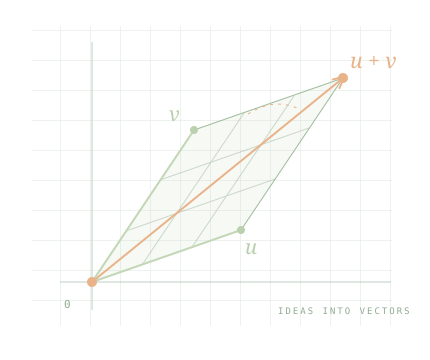
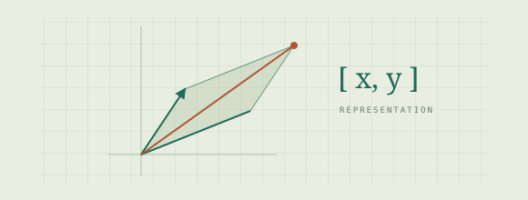
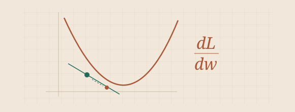
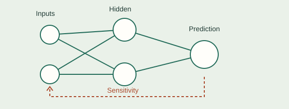
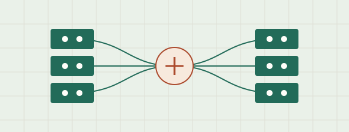
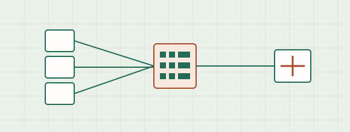

An intuition-first field guide / Volume 01
Understand the math.
Build the intuition.
Part I of Becoming an AI Engineer starts beneath the model. Explore the ideas that turn numbers into representations, predictions, and learning.
Start with chapter 01
Intuition before notation
Start with a question.
Give the symbols a reason to exist.
See what changes
Original diagrams and small
experiments make ideas tangible.
Connect it to the model
From one calculation to the
operations inside an LLM.
First, a foundation.
Part I / The language of learning

The Language of LLMs:
Vectors, Matrices, and Meaning
How vectors hold information, matrices transform it, and attention combines it.

How LLMs Learn:
Derivatives, Gradients, and Optimization
How small changes become gradients, and gradients become better predictions.

From Text to Tokens: How LLMs Read Language
How text becomes vocabulary IDs, and how those choices shape context, memory, and model compatibility.

From Tokens to Meaning: How Embeddings Represent Language
How token rows learn useful representations, and how similarity, context, and position shape their use.

From Inputs to Predictions: How Neural Networks Learn
How a network predicts, computes sensitivities, updates parameters, and supplies the building blocks of a Transformer.

Inside the Transformer: How Attention Builds Context
Follow projected attention, a complete decoder block, and next-token selection; distinguish architecture from execution optimizations.

Attention in Action: How Models Select and Combine Context
Audit every query's mixture, trace its gradients, and separate information access from cache storage and tiled execution.
Not a formula collection.
A way of thinking.
Start with arithmetic and a willingness to work through small examples. No prior linear algebra or calculus is assumed: we explain the notation, operations, and mathematical steps as they appear. Read in order, keep a notebook, and pause at the explained checks. You don't need a GPU or a machine-learning framework. Each chapter builds toward an LLM operation you can calculate and explain.
Explore the book's teaching & design system →